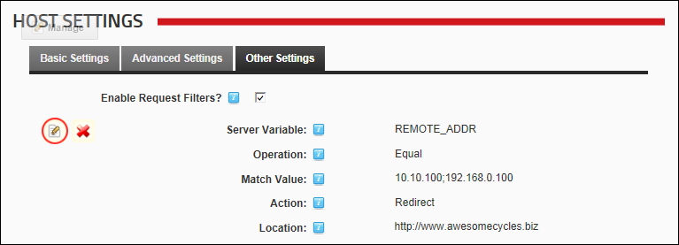

Editing a Request Filter
How to edit a request filter that has been added to your DotNetNuke installation.
- Navigate to Host >
 Host Settings.
Host Settings.
- Select the Other Settings tab.
- At Enable Request Filters?, .
- Click the Edit
 button beside the filter to be edited.
button beside the filter to be edited.

- Edit one or more fields as required.
- Click the Save
 button.
button.